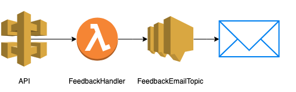

Deploying serverless apps with CDK
Martin Lechner
Lead Software Engineer @ Autoscou2412.12.2019
Who is using infrastructure as code?
Who is using cloudformation yaml?
Who likes using cloudformation yaml?
Pain points of cloudformation yaml
- lots of boilerplate
- exact knowledge needed (e.g. permissions)
- unintuitive api
- no autocomplete
- hard to test without deploying
CDK

Comparison of Lines of Code
| Name | Cloudformation | CDK |
|---|---|---|
| Serverless API | 403 | 45 |
| S3 Static Website | 187 | 21 |
Constructs
- Level 1: One to One mappings of Cloudformation
- Level 2: A better api for certain things, e.g. S3 Bucket
- Level 3: Collection of multiple resources
Enough talk - code time
Not yet...
Empty Stack
import cdk = require('@aws-cdk/core')
export class MySampleStack extends cdk.Stack {
constructor(scope: cdk.Construct, id: string, props?: cdk.StackProps) {
super(scope, id, props)
// Your resources here
}
}
Product folks like email notifications
import { Topic } from '@aws-cdk/aws-sns'
// ... constructor(scope: cdk.Construct, id: string, props?: cdk.StackProps) {
const topic = new Topic(this, 'FeedbackEmailTopic', {
displayName: 'as24-customer-feedback-email-delivery'
})
topic.addSubscription(
new EmailSubscription('letsgetfeedback@scout24.com')
)
Lambda Function
import { Function, Code, Runtime, Tracing } from '@aws-cdk/aws-lambda'
const feedbackHandlerFunction = new Function(this, 'FeedbackHandler', {
code: Code.fromAsset(__dirname + '/../../dist/src'),
runtime: Runtime.NODEJS_12_X,
handler: 'index.handleEvent',
tracing: Tracing.ACTIVE,
logRetention: RetentionDays.ONE_WEEK
})
Environment & Permissions
feedbackHandlerFunction.addEnvironment('snsTopic', topic.topicArn)
topic.grantPublish(feedbackHandlerFunction)
API Gateway
const feedbackIntegration = new LambdaIntegration(feedbackHandlerFunction)
const api = new RestApi(this, 'API', {
defaultCorsPreflightOptions: {
allowOrigins: Cors.ALL_ORIGINS,
allowMethods: Cors.ALL_METHODS
}
})
api.root
.resourceForPath('/customer-feedback')
.addMethod('POST', feedbackIntegration)
Acknoledgements
- AWSLoft Workshops
- Scout24 colleagues for discussion
References
- https://docs.aws.amazon.com/cdk/api/latest/
Bonus
const websiteBucket = new Bucket(this, 'CustomerFeedbackWebsiteBucket', {
websiteIndexDocument: 'index.html',
publicReadAccess: true,
bucketName: 'as24-customer-feedback-website'
})
new BucketDeployment(this, 'DeployWebsite', {
sources: [Source.asset(__dirname + '/../../fragment/target')],
destinationBucket: websiteBucket,
destinationKeyPrefix: 'assets/as24-customer-feedback/'
})